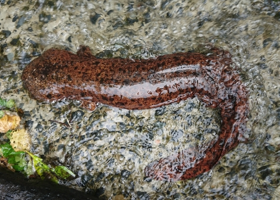

(백엔드 애들이 받아올 사용자 아이디)님 로그아웃

· 이름 : 도룡뇽(Salamander)
· 수명 : 평균 3~6년
· 크기 : 7~9cm(암컷), 8~12cm(수컷)
· 먹이 : 작은 곤충, 지렁이 등
· 서식지 : 축축한 숲 또는 웅덩이
· 부연 설명 : 도롱뇽은 ‘물속에 사는 도마뱀’이라는 뜻으로 불린다.
몸은 좁고 길며, 꼬리가 길다.
대부분 온대 지역에 살며 살갗으로 몸 안의 물기가 빠져 나가기 때문에 덥고 메마른 상태에서 견디지 못한다.
그래서 여름에는 물기가 있는 곳에서 숨었다가 서늘한 밤에만 움직인다.
· 수명 : 평균 3~6년
· 크기 : 7~9cm(암컷), 8~12cm(수컷)
· 먹이 : 작은 곤충, 지렁이 등
· 서식지 : 축축한 숲 또는 웅덩이
· 부연 설명 : 도롱뇽은 ‘물속에 사는 도마뱀’이라는 뜻으로 불린다.
몸은 좁고 길며, 꼬리가 길다.
대부분 온대 지역에 살며 살갗으로 몸 안의 물기가 빠져 나가기 때문에 덥고 메마른 상태에서 견디지 못한다.
그래서 여름에는 물기가 있는 곳에서 숨었다가 서늘한 밤에만 움직인다.